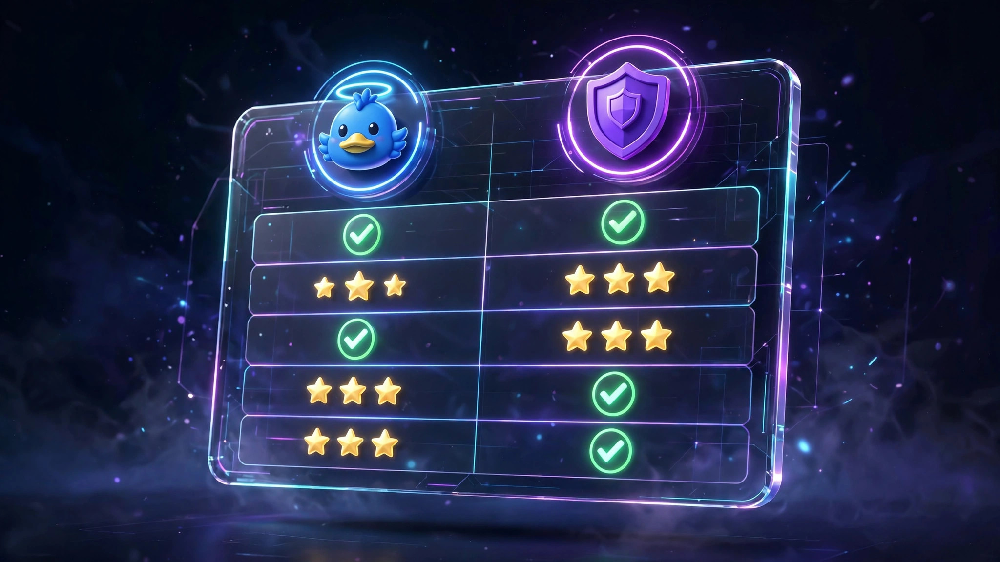

Duck.ai vs Venice.ai: Which No-Signup AI Chatbot Wins in 2026?
If you want an AI chatbot without creating an account, the field narrows fast — and then it narrows to exactly two serious answers. Duck.ai takes mainstream models from OpenAI, Anthropic, Meta and Mistral and puts DuckDuckGo's anonymization layer in front of them. Venice.ai goes the other direction: private-by-default infrastructure running open models with far fewer content guardrails. Both work with zero sign-up. They are built for different people, and picking wrong means either hitting a wall on the questions you actually want to ask, or leaving privacy on the table you didn't need to. Here's the honest head-to-head.
A note on method: this comparison is built from each product's official documentation, pricing pages, and help centers as of October 2026, cross-checked against independent reviews — not from marketing copy. Both tools were opened and used without an account to confirm the no-sign-up flow is real, which is why they sit in our verified agents directory in the first place. Model lineups and free limits change quarterly; where numbers are stated, treat them as "as documented this month" and re-check before depending on them. For the wider field, our 12-chatbot no-sign-up test covers the other contenders that didn't make this final.
How we compared them
Five things decide which of these deserves your default tab:
The no-sign-up experience. Not just "can you open it without an account" — how much of the product survives without one. Some tools let you chat freely as a guest; others quietly reserve the good models for logged-in users.
Privacy architecture. "No account" is the front door; what happens to your prompts inside is the real question. Who sees your text, where is history stored, and is anything used for training?
Model quality and choice. One service gives you six mainstream models to switch between; the other gives you its own uncensored open models. Different strengths, and the gap matters more than the marketing suggests.
Free limits. Daily prompt caps, context windows, reset times — the fine print that decides whether the free tier covers a workday or an afternoon.
Content guardrails. The philosophical split. Mainstream models refuse; uncensored-leaning models mostly don't. Neither is "better" in the abstract — it depends entirely on what you're asking.
Duck.ai — the anonymized mainstream pick
Duck.ai is DuckDuckGo's private AI chat: one clean interface, roughly six third-party models you can switch between mid-conversation, with DuckDuckGo stripping your IP and identifiers before prompts reach the providers. As of late 2026 the free lineup has included Claude 4.5 Haiku, Llama 4 Scout, Mistral Small 3, GPT-4o mini, GPT-5 mini, and the open gpt-oss-120b, with OpenAI's GPT-5.6 Luna serving as the default free model — genuinely current hardware for a no-account product. There is also a paid DuckDuckGo subscription tier with more advanced models and higher limits, but the free experience doesn't start with a sign-up wall.
No-sign-up access: The real thing. DuckDuckGo's own documentation states both Duck.ai and its search AI features are free, anonymized, and available with no account required. Open the page, pick a model, start typing. Chat history is kept on your device, not on DuckDuckGo's servers, and prompts aren't used to train models.
Best for: Everyday questions where you want mainstream-model quality without the data relationship. The killer feature is model-switching: ask the same question to GPT, Claude, and Llama in three tabs and compare. For research, writing help, coding questions, and general knowledge, having six models beats having one — and the anonymization layer means none of the providers build a profile on you.
Watch out for: The daily cap is the main friction — free usage is rate-limited and resets at midnight UTC, so heavy days hit a wall. There's no live internet access in the chat, so forget breaking news or stock prices. And the guardrails are mainstream: these are the providers' standard models with standard refusals, just anonymized. If your question is one Claude would refuse on claude.ai, it'll refuse here too. Our full Duck.ai review has the details.

Venice.ai — the private uncensored pick
Venice.ai is built on the opposite thesis: instead of anonymizing mainstream models, it runs its own open-weight models (the "Venice Uncensored" line) on infrastructure designed so conversations never touch Venice's servers — history lives in your browser. The free tier allows 10 text prompts and 15 image prompts per day with no login at all, which is a smaller daily budget than Duck.ai's but aimed at a different user. It also offers image generation on the free tier, which Duck.ai doesn't do. Paid Pro at $18/month lifts text to unlimited.
No-sign-up access: Genuine. Open venice.ai, choose a model, chat — no email, no account, no card. The 10/5 daily text/image allowance for anonymous users resets at midnight UTC. Note the nuance: Venice also proxies some Big Tech models (Claude, Gemini) in an anonymous mode, but those keep their providers' safeguards — the uncensored experience comes specifically from Venice's own open models.
Best for: Creative writing, fiction, roleplay, and any question where mainstream guardrails get in the way. The Venice Uncensored models answer what Claude and GPT refuse, and the stateless-by-default design means there's no server-side history to subpoena, leak, or train on. For sensitive creative work, the combination of "no account" and "no server storage" is the strongest privacy story of any hosted chatbot.
Watch out for: Ten prompts a day is tight — it's a tasting portion, not a workday. The context window on free conversations is small (around 2,000 tokens), so long threads degrade fast; keep prompts short and ask for output in chunks. And "uncensored" describes the open models, not everything on the platform — the proxied mainstream models refuse like they do everywhere else. Our full Venice.ai review breaks down the tiers. If you also want account-free image generation to go with the chat, our image generator roundup covers the options.
Side-by-side comparison
| Duck.ai | Venice.ai | |
|---|---|---|
| Sign-up needed? | No | No |
| What you get free | ~6 mainstream models, daily cap (resets midnight UTC) | 10 text + 15 image prompts/day (resets midnight UTC) |
| Privacy model | Anonymized: IP stripped before providers; history on your device | Stateless: conversations stay in your browser, not on servers |
| Model philosophy | Mainstream models (GPT, Claude, Llama, Mistral) with standard guardrails | Own uncensored open models; proxied Big Tech models keep their refusals |
| Image generation | No | Yes (15/day free) |
| Live web access | No | No |
| Paid upgrade | DuckDuckGo Plus/Pro from $9.99/mo | Pro $18/mo, unlimited text |
| Standout trait | Switch between six models, compare answers | Uncensored answers + strongest no-storage privacy |
Model lineups and caps as documented October 2026; both change them periodically. "Uncensored" applies to Venice's own open models only.
Which one should you actually use?
You want the best answers to normal questions, privately: Duck.ai. Six current mainstream models behind an anonymization layer, no account, history on your device. For research, writing, and coding help, model choice beats everything else.
You want answers the mainstream models won't give: Venice.ai. The uncensored open models plus no-server-storage design is the only hosted combo that covers both content freedom and privacy. Budget your 10 daily prompts.
You want both: Use both — that's the honest answer, and it costs nothing. Duck.ai as the daily driver for quality, Venice.ai for the questions Duck.ai's guardrails block. No accounts on either, so there's nothing to manage.
You hit Duck.ai's daily cap regularly: That's the signal to either spread load across both tools or consider the paid tier. Don't do what most people do and create a ChatGPT account "just for the overflow" — at that point you've traded away the privacy you came for.
FAQ
Is Duck.ai really free with no sign-up?
Yes. DuckDuckGo's documentation states Duck.ai is free, anonymized, and requires no account. You get a daily allowance of prompts across ~6 models, resetting at midnight UTC. Paid tiers exist for heavier use, but the free tier has no sign-up wall.
Is Venice.ai really free with no sign-up?
Yes — 10 text prompts and 15 image prompts per day with no login, no email, no card. The allowance is small by design; unlimited text is $18/month on Pro. Conversations stay in your browser rather than on Venice's servers.
Which is more private, Duck.ai or Venice.ai?
Different mechanisms. Duck.ai strips your identity before prompts reach third-party providers and keeps history on your device — but the providers still process your prompt text. Venice.ai's stateless design means your conversations never reach Venice's servers at all. For maximum privacy against everyone including the provider, Venice's architecture goes further.
Why does Venice.ai refuse some questions if it's "uncensored"?
Because "uncensored" describes Venice's own open-weight models. Venice also offers mainstream models (Claude, Gemini) through an anonymous proxy, and those keep their providers' content policies. If you want the uncensored experience, select a Venice Uncensored model explicitly.
Can I use these for work or commercial purposes?
For casual professional use, yes — but read the terms. Neither free tier comes with an SLA, uptime guarantee, or support, and both reserve the right to change limits. Don't paste confidential company data into any free chatbot, no matter how private its marketing sounds.